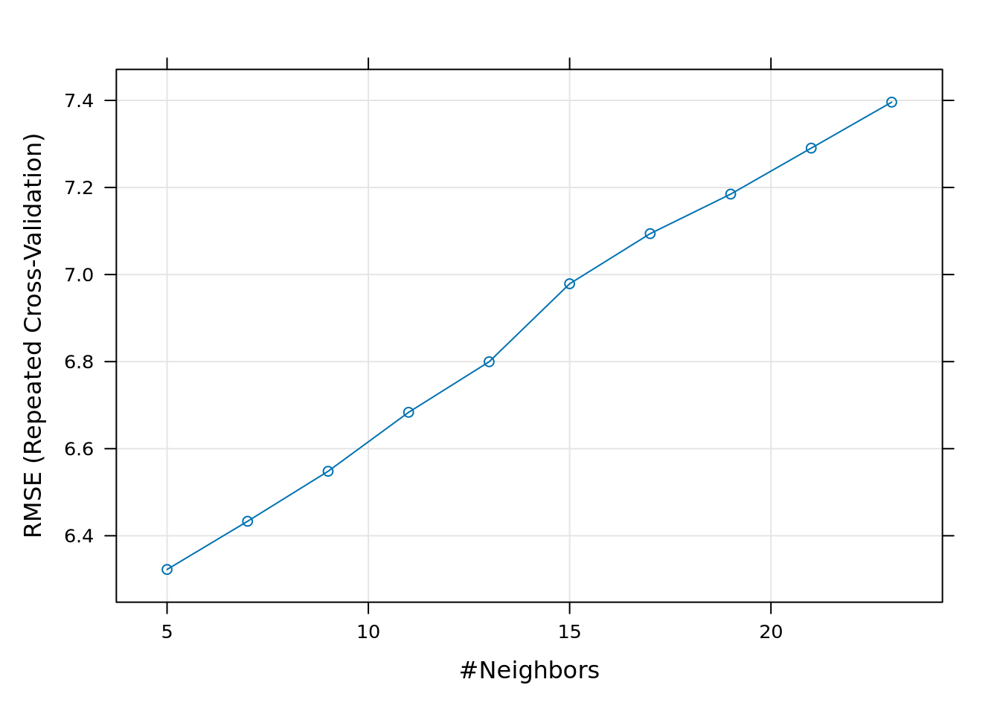

Fitting Non Linear Regression Models to Body Fat Data
Author
Your Name Here
Published
Last modified on January 10, 2024 08:30:35 Eastern Standard Time
Directions
Type complete sentences to answer all questions inside the .callout tags provided in the R Markdown document. Use inline R code to report numeric answers inside the .callout tags (i.e. do not hard code your numeric answers).
In the article Fitting Percentage of Body Fat to Simple Body Measurements, Johnson (1996) uses the data at http://jse.amstat.org/datasets/fat.dat.txt provided to him by Dr. A. Garth Fischer in a personal communication on October 5, 1994, as a multiple linear regression activity with his students. A subset of the variables at http://jse.amstat.org/datasets/fat.dat.txt is available in the R package mfp by Ambler and Benner (2022) and the data set is used frequently in the text Statistical Regression and Classification by Matloff (2017).
The purpose of this activity is to have the reader create several non linear regression models to predict the body fat of males. Load a cleaned version of the data available from https://raw.githubusercontent.com/alanarnholt/MISCD/master/bodyfatClean.csv into your R session using the read.csv() function. Use the head() function to view the first six rows of the first eight columns of the data frame bodyfatClean.
R Code
# Type your code and comments inside the code chunkone <-"https://raw.githubusercontent.com/alanarnholt/MISCD/"two <-"master/bodyfatClean.csv"url <-paste0(one, two)bodyfatClean <-read.csv(url)head(bodyfatClean[, 1:8]) # view the first six rows and first 8 columns
Use the glimpse() function from the dplyr package written by Wickham et al. (2023) to view the structure of bodyfatClean.
Problem 1 Answers
# Type your code and comments inside the code chunk
Now that you have seen the structure of the data and have studied the research question, answer the following questions.
Problem 2
How many observations and variables are in bodyfatClean?
Problem 2 Answers
# Type your code and comments inside the code chunk
Type your complete sentence answer here using inline R code and delete this comment.
Problem 3
In the regression setting, the variable that we want to predict is called the response variable. What is the name of the response variable in your case?
Problem 3 Answers
Type your complete sentence answer here using inline R code and delete this comment.
Problem 4
In the regression setting, the variable(s) that we use to predict the response variable is(are) called the explanatory or predictor variable(s). How many predictor variable(s) are available to use in this data set?
Problem 4 Answers
Type your complete sentence answer here using inline R code and delete this comment.
Problem 5
How many of the predictor variables are numerical and how many of them are categorical?
Problem 5 Answers
Type your complete sentence answer here using inline R code and delete this comment.
Partitioning the Data
When building a predictive model with a sufficiently large data set, it is common practice to hold out some fraction (usually less than 50%) of the data as a test set. It is difficult to provide a general rule for the size of the training and testing sets as the ideal split depends on the signal to noise ratio in the data (Hastie, Tibshirani, and Friedman 2009).
Use the creatDataPartition() function from the caret package written by Kuhn (2023) to partition the data in to training and testing.
For illustration purposes, the Boston data set from the MASS package written by Ripley (2023) is used to illustrate various steps in predictive model building. The Boston help file indicates the data set consists of 506 observations on 14 different variables for houses in Boston collected in 1978. To open the Boston help file, type ?Boston at the R prompt once the MASS package has been loaded. The goal in this example is to predict the median house price (medv) in Boston. The Boston data set is divided into a training set containing roughly 80% of the observations and a testing set containing roughly 20% of the observations. Before calling the createDataPartition() function, it is important to set a seed to ensure the data partition is reproducible.
The arguments y, p, list and times can be used with the createDataPartition() function. These arguments represent a vector of outcomes (Boston$medv), the percentage of data that goes to training (0.80), should the results be in a list (FALSE) and the number of partitions to create (1) respectively. The result from using createDataPartition() is a vector of indices one can use to create the training and testing sets.
R Code
library(caret) # load the caret packagelibrary(MASS) # load MASS packageset.seed(3178) # set seed for reproducibilitytrainIndexB <-createDataPartition(y = Boston$medv,p =0.80,list =FALSE,times =1)trainingB <- Boston[trainIndexB, ]testingB <- Boston[-trainIndexB, ]dim(trainingB) # Check the dimension of the training set
[1] 407 14
dim(testingB) # Check the dimension of the testing set
[1] 99 14
Problem 6
Partition the data frame bodyfatClean into training and testing partitions where roughly 80% of the data is used for training and roughly 20% of the data is used for testing. To ensure reproducibility of the partition, use set.seed(314). The response variable should be brozek_C (the computed brozek based on the reported density).
Problem 6 Answers
# Type your code and comments inside the code chunkset.seed(314)
Problem 7
Use the dim() function to verify the sizes of the training and testing data sets.
Problem 7 Answers
# Type your code and comments inside the code chunk
Type your complete sentence answer here using inline R code and delete this comment.
Pre-Processing the Data
Some algorithms work better when the predictors are on the same scale. This section considers the preProcess() function for the caret package to find potentially helpful transformations of the training predictors. Three different transformations are considered: center, scale, and BoxCox. A center transform computes the mean of a variable and subtracts the computed mean from each value of the variable. A scale transform computes the standard deviation of a variable and divides each value of the variable by the computed standard deviation. Using both a center and a scale transform standardizes a variable. That is, using both center and scale on a variable creates a variable with a mean of 0 and a standard deviation of 1. When all values of a variable are positive, a BoxCox transform will reduce the skew of a variable, making it more Gaussian.
The R code below applies a center, scale, and BoxCox transform to all the predictors in trainingB (the training set for the Boston data) and stores the results in pp_trainingB. The computed transformations are applied to both the trainingB and the testingB data sets using the predict() function with the results stored in the objects trainingTransB and testingTransB, respectively. Note that in the Boston data set the response (medv) is the last column (\(14^{\text{th}}\)) of the training data frame and is removed before pre-processing with trainingB[ , -14].
Your turn now to work with the bodyfatClean data frame.
Problem 8
Provide the column number of bodyfatClean where brozek_C is stored.
Problem 8 Answers
# Type your code and comments inside the code chunk
Type your complete sentence answer here using inline R code and delete this comment.
Problem 9
Use the preProcess() function to transform the predictors that are in the training data set crated in Problem 6. Specifically, pass a vector with “center”, “scale”, and “BoxCox” to the method = argument of preProcess(). Make sure not to transform the response (brozek_C). Store the results in an object named pp_training.
Problem 9 Answers
# Type your code and comments inside the code chunk
Problem 10
Use the predict() function to construct a transformed training set and a transformed testing set. Name the new transformed data sets trainingTrans and testingTrans, respectively.
Problem 10 Answers
# Type your code and comments inside the code chunk
\(k\)-Fold Cross Validation
\(k\)-fold cross validation divides the data into \(k\) subsets and performs the holdout method \(k\) times. Specifically, one of the \(k\) subsets is used as the test set and the other \(k − 1\) subsets are put together to form a training set. The average MSE across all \(k\) trials is computed and is denoted \(CV_{(k)}\)
Resampling with caret
The trainControl() function from caret specifies the resampling procedure to be used inside the train() function. Resampling procedures include \(k\)-fold cross-validation (once or repeated), leave-one-out cross-validation, and bootstrapping. The following R code creates a myControlB object that will signal a 10-fold repeated five times cross-validation scheme (50 resamples in total) to the train() function for the Boston data set. Note that the argument savePredictions = "final" saves the hold-out predictions for the optimal tuning parameters.
Use the trainControl() function to define the resampling method (repeated cross-validation), the number of resampling iterations/folds (10), and the number of repeats or complete sets to generate (5), storing the results in the object myControl.
Problem 11 Answers
# Type your code and comments inside the code chunk# Define the type of resampling
Building Non Linear Models
Regression tree model
Tree based methods for regression problems partition the predictor space into \(J\) distinct and non-overlapping regions, \(R_1, R_2, \ldots, R_J\). To make a prediction for a particular observation, the mean of the training observations in the region for the observation of interest is computed. Tree based methods are easy to understand and interpret; however, they also tend to overfit the training data and are not as competitive as random forests. Basic trees are introduced as a building block for random forests. The goal is to find regions \(R_1, R_2, \ldots, R_J\) that minimize the RSS, denoted by
where \(\hat{y}_{R_j}\) is the mean response for the training observations within the \(j^{\text{th}}\) region. Since it is not possible to consider every possible partition of the predictor space a recursive binary splitting algorithm is generally employed. Recursive binary splitting first selects the predictor \(X_j\) and the cutpoint \(s\) such that splitting the predictor space into the regions \(\{X|X_j <s\}\) and \(\{X|X_j \ge s\}\) leads to the greatest reduction in RSS (James et al. 2017). The same process is used to find the optimal cutpoint within each region that minimizes the RSS. This process continues until a predefined stopping criteria is met. A common stopping criteria is to refuse a split when the count in the proposed region drops below a threshold such as 5 or 10. The smaller the count for a region, the more likely the tree will be overfit to the training data and perform poorly on testing data.
Tree model using caret
To fit a model with a particular algorithm, the name of the algorithm is given to the method argument of the train() function. The train() function accepts a formula interface provided the data is also specified in the function. The R code below fits a Regression Tree model by regressing medv on the predictor age in the training data set. The preferred way to train a model is by passing the response vector to the y argument and a data frame of the predictors or a matrix of the predictors to the x argument of train(). Below the train() function is used with method = "rpart" and the object myControlB is provided to the trControl argument.
Regression Tree with one predictor (age)
R Code
# Regression Tree with one predictor (age)set.seed(31)mod_TRB <-train(y = trainingTransB$medv,x =data.frame(age = trainingTransB[ , 7]),trControl = myControlB,method ="rpart",tuneLength =10)mod_TRB
CART
407 samples
1 predictor
No pre-processing
Resampling: Cross-Validated (10 fold, repeated 5 times)
Summary of sample sizes: 366, 367, 367, 365, 367, 366, ...
Resampling results across tuning parameters:
cp RMSE Rsquared MAE
0.002934463 9.299940 0.07891837 6.727907
0.002983166 9.295840 0.07939126 6.722688
0.004098588 9.200440 0.08487121 6.651356
0.004613882 9.111639 0.09263128 6.569656
0.004830949 9.062123 0.09769315 6.530259
0.005080248 9.027292 0.10173868 6.504152
0.005456624 8.947554 0.10882363 6.432420
0.006964946 8.792057 0.12656586 6.301637
0.034187558 8.804734 0.11621264 6.311815
0.135909724 9.136989 0.06740295 6.603690
RMSE was used to select the optimal model using the smallest value.
The final value used for the model was cp = 0.006964946.
Here, the train() function from caret computes the complexity parameter (\(c_p\)) that results in the smallest RMSE when using only age from trainingTransB. As the complexity parameter increases from zero, branches are pruned from the tree, reducing the complexity of the model.
Note that mod_TRB contains 10 models and the final model was chosen by the \(c_p\) value of 0.0069649 corresponding to the model with minimum RMSE (8.7920571).
Once the optimal complexity parameter is determined from cross-validation, a regression tree is grown using the transformed age in trainingTransB with the R code below.
To get the final model, use the rpart() function from the rpart package as shown below. Notice that cp = mod_TRB$bestTune picks the final model from mod_TRB.
Finally, to visualize the final model use the rpart.plot() function from the rpart.plot package.
R Code
library(rpart.plot)rpart.plot(mod_TRBG, yesno =2)
Consider the mod_TRBG output and the resulting plot from using rpart.plot(). Note that the age has negative values. This is due to the use of transformed variables. There are n = 118 homes greater than or equal to a value of 0.86 for the variable (transformed) age. The average medv for these 118 homes is 17.22 thousand dollars. There are n = 195 homes under 0.86 for age but greater than -1.047 or more for age. These 195 homes have an average medv of 23.36 thousand dollars. There are n = 94 homes under -1.047 for age. The average medv for the n = 94 homes is 27.71 thousand dollars.
Even though the transformed variables generally produce better models, the interpretations can be rather difficult. In such situations, it may be advisable to use untransformed variables.
R Code
# Regression Tree with untransformed variables.set.seed(31)mod_TRBU <-train(y = trainingB$medv,x =data.frame(age = trainingB[ ,7]),trControl = myControlB,method ="rpart",tuneLength =10)mod_TRBU
CART
407 samples
1 predictor
No pre-processing
Resampling: Cross-Validated (10 fold, repeated 5 times)
Summary of sample sizes: 366, 367, 367, 365, 367, 366, ...
Resampling results across tuning parameters:
cp RMSE Rsquared MAE
0.002934463 9.297298 0.08016767 6.717037
0.002983166 9.293197 0.08063547 6.711817
0.004098588 9.203189 0.08532768 6.649924
0.004613882 9.114668 0.09304447 6.566351
0.004830949 9.066763 0.09778405 6.530999
0.005080248 9.031949 0.10180704 6.504892
0.005456624 8.952166 0.10893979 6.433160
0.006964946 8.795055 0.12691561 6.300708
0.034187558 8.809281 0.11588785 6.315299
0.135909724 9.140502 0.06718872 6.605706
RMSE was used to select the optimal model using the smallest value.
The final value used for the model was cp = 0.006964946.
library(rpart)set.seed(31)mod_TRGU <-rpart(medv ~ age, data = trainingB)mod_TRGU
Using the untransformed data, the explanation is simple and practical. Specifically, there are n = 118 homes greater than or equal to 92.3 years of age. The average medv for these 118 homes is 17.22 thousand dollars. There are n = 195 homes under 92.3 years of age but greater than 41.3 or more years of age. These 195 homes have an average medv of 23.63 thousand dollars. Finally, there are n = 94 homes under 41.3 years of age. The average medv for the n = 94 homes under 41.3 years of age is 27.72 thousand dollars.
Note
From here forward we will use the untransformed predictors (data) in the examples.
Tree model with all predictors
To get a Tree model with all the predictor variables, modify the previous R code to use the untransformed predictors as follows:
R Code
# Regression Tree with all predictorsset.seed(31)mod_TRBall <-train(y = trainingB$medv,x = trainingB[ , -14], trControl = myControlB,method ="rpart",tuneLength =10)mod_TRBall
CART
407 samples
13 predictor
No pre-processing
Resampling: Cross-Validated (10 fold, repeated 5 times)
Summary of sample sizes: 366, 367, 367, 365, 367, 366, ...
Resampling results across tuning parameters:
cp RMSE Rsquared MAE
0.008491945 4.651223 0.7465801 3.208089
0.010367693 4.739356 0.7382265 3.271009
0.013264480 4.810732 0.7306569 3.359105
0.018454204 4.899144 0.7185652 3.437962
0.024923514 5.070968 0.6983436 3.603513
0.025916903 5.082143 0.6965285 3.622541
0.032639407 5.104272 0.6906480 3.678620
0.067254001 5.652936 0.6309641 4.064486
0.163979782 6.433538 0.5225446 4.721590
0.479978887 8.571615 0.3139804 6.236646
RMSE was used to select the optimal model using the smallest value.
The final value used for the model was cp = 0.008491945.
Next, the RMSE() function returns the root mean square error for the regression tree model using the testing data.
R Code
RMSE(pred = mod_TRBallG_pred, obs =testingB$medv)
[1] 4.472291
There is a difference between the training RMSE (4.6512229) and the testing RMSE (4.4722907). What does this suggest?
Your turn now to work with the bodyfatClean data frame.
Note
Many statistical algorithms work better on transformed variables; however, the user whether a nurse, physical therapist, or physician should be able to use your proposed model without resorting to a spreadsheet or calculator.
Problem 12
Use the train() function with method = "rpart", tuneLength = 10 along with the myControl as the trControl to fit a regression tree named mod_TR. Use set.seed(42) for reproducibility. The goal is to predict body fat using the training data in training created in Problem 6. Use brozek_C as the response and use all the predictors. (Do not use the transformed predictors due to interpretation issues.)
Problem 12 Answers
# Type your code and comments inside the code chunk# Regression Tree with all predictorsset.seed(42)
Problem 13
According to the output, what criterion was used to pick the best submodel? What is the value of this criterion?
Problem 13 Answers
Type your complete sentence answer here using inline R code and delete this comment.
Problem 14
Use the rpart() function from the rpart package written by Therneau and Atkinson (2023) to build the regression tree using the complexity parameter (\(c_p\)) value from mod_TR above. Name this tree mod_TRG.
Problem 14 Answers
# Type your code and comments inside the code chunklibrary(rpart)set.seed(31)
Problem 15
Use the rpart.plot() function from the rpart.plot package to graph mod_TRG by Milborrow (2022) to graph mod_TRG.
Problem 15 Answers
# Type your code and comments inside the code chunklibrary(rpart.plot)
Problem 16
What predictors are used in the graph of mod_TRG?
Problem 16 Answers
Type your complete sentence answer here using inline R code and delete this comment.
Problem 17
Explain the tree.
Problem 17 Answers
Type your complete sentence answer here using inline R code and delete this comment.
Problem 18
Compute the RMSE for mod_TRG using the testing data set.
Problem 18 Answers
# Type your code and comments inside the code chunk
Random Forest model
A random forest is a collection of decorrelated trees. A tree in random forest is constructed by considering only a random sample of the possible predictors at each split. The number of predictors considered at each split is generally the square root of the total number of predictors in the data set (\(\sqrt{p}\)). The data used to grow a particular tree is not the training data but a bootstrap sample of the training data. The resulting trees are decorrelated since the predictors are selected at random, have high variance and low bias. By averaging the results from many trees, the results from a random forest are less variable than a single tree, yet relatively unbiased.
To create a random forest, which is a collection of decorrelated trees, the method argument in the train() function would be one of either rf or ranger. The following example shows the R code for the random forest model to predict medv in Boston data.
Random Forest
407 samples
13 predictor
No pre-processing
Resampling: Cross-Validated (10 fold, repeated 5 times)
Summary of sample sizes: 366, 367, 367, 365, 367, 366, ...
Resampling results across tuning parameters:
mtry RMSE Rsquared MAE
2 3.664810 0.8550449 2.458839
5 3.281327 0.8749608 2.248277
9 3.293472 0.8710413 2.251443
13 3.363650 0.8647896 2.299084
RMSE was used to select the optimal model using the smallest value.
The final value used for the model was mtry = 5.
Using the default arguments for rf returns an average RMSE value of 3.2813268 when the parameter mtry = 5.
Next, the predict() function is used to predict to the median house value (medv) using the testing data (testingB).
R Code
RF_pred <-predict(mod_RF, newdata = testingB)
Next, the RMSE() function is used to determine the root mean square error for the the random forest model using the testing data.
R Code
RMSE(pred = RF_pred, obs = testingB$medv)
[1] 2.889238
Problem 19
Use the train() function with method = "rf", tuneLength = 4 along with the myControl as the trControl to fit a random forest named mod_RF2. Use set.seed(42) for reproducibility.
Problem 19 Answers
# Type your code and comments inside the code chunkset.seed(42)
Problem 20
Use the function RMSE() in conjunction with the predict() function to find the root mean square for the testing data.
Problem 20 Answers
# Type your code and comments inside the code chunk
\(k\)-nearest neighbors model
One of the simplest methods to provide a nonparametric estimate of f in a regression setting is using \(k\)-nearest neighbors (\(k\)-NN). \(k\)-NN is an algorithm that computes a weighted average of the \(k\) nearest neighbors. Commonly used distance measures for continuous variables include: Euclidean, Manhattan, and Minkowski. The Euclidean, Manhattan, and Minkowski distances between two points \(X = (x_1, x_2, \dots, x_n)\) and \(Y = (y_1, y_2, \dots, y_n)\) are defined in Equation 2, Equation 3, and Equation 4, respectively. Note that using p = 1 in Equation 4 results in Equation 3, and using p = 2 in Equation 4 results in Equation 2.
k-Nearest Neighbors
407 samples
13 predictor
No pre-processing
Resampling: Cross-Validated (10 fold, repeated 5 times)
Summary of sample sizes: 366, 367, 367, 365, 367, 366, ...
Resampling results across tuning parameters:
k RMSE Rsquared MAE
5 6.322566 0.5557056 4.436682
7 6.433252 0.5337296 4.545029
9 6.548103 0.5116143 4.633764
11 6.683594 0.4886915 4.721113
13 6.799718 0.4703037 4.832851
15 6.978860 0.4422369 4.976440
17 7.094002 0.4247272 5.084296
19 7.184806 0.4107144 5.159167
21 7.290436 0.3928045 5.246419
23 7.396043 0.3750593 5.343585
RMSE was used to select the optimal model using the smallest value.
The final value used for the model was k = 5.
plot(mod_KNN)

Using the default arguments for knn returns an average RMSE value of 6.3225663 when the parameter k = 5 (number of neighbors).
The function RMSE() in conjunction with the predict() function are used to find the root mean square for the testing data.
Use the train() function with method = "knn", tuneLength = 10 along with the myControl as the trControl to fit a random forest named mod_KNN2. Use set.seed(42) for reproducibility.
Problem 21 Answers
# Type your code and comments inside the code chunkset.seed(42)
Problem 22
For the final model, what is the value of \(k\)?
Problem 22 Answers
Type your complete sentence answer here using inline R code and delete this comment.
Problem 23
Use the function RMSE() in conjunction with the predict() function to find the root mean square for the testing data.
Problem 23 Answers
# Type your code and comments inside the code chunk
Comparing different models
Side by side boxplots are used to compare the MAE, RMSE, and \(R^2\) values for the models mod_TRBall, mod_RF and mod_KNN.
R Code
ANS <-resamples(list(TREE = mod_TRBall, RF = mod_RF, KNN = mod_KNN))summary(ANS)
Call:
summary.resamples(object = ANS)
Models: TREE, RF, KNN
Number of resamples: 50
MAE
Min. 1st Qu. Median Mean 3rd Qu. Max. NA's
TREE 2.318344 2.898470 3.142674 3.208089 3.378693 4.544512 0
RF 1.528162 1.970816 2.234513 2.248277 2.475228 3.143329 0
KNN 3.031000 3.883723 4.375000 4.436682 4.995071 5.760000 0
RMSE
Min. 1st Qu. Median Mean 3rd Qu. Max. NA's
TREE 3.011744 3.802089 4.454844 4.651223 5.401067 7.704795 0
RF 1.965239 2.662944 3.038454 3.281327 3.999440 6.548174 0
KNN 4.219073 5.389275 6.246657 6.322566 7.332001 8.562755 0
Rsquared
Min. 1st Qu. Median Mean 3rd Qu. Max. NA's
TREE 0.4035974 0.6743430 0.7851845 0.7465801 0.8405811 0.9066279 0
RF 0.5272393 0.8480704 0.8993478 0.8749608 0.9240706 0.9706998 0
KNN 0.2595814 0.4670864 0.5745526 0.5557056 0.6668533 0.7451750 0
bwplot(ANS, scales ="free")
dotplot(ANS, scales ="free")
The boxplots suggest the random forest models perform better on the training data and were more consistent (less variability) than either the KNN or Tree models.
Problem 24
Reproduce the above boxplot with models that you created for body fat data.
Problem 24 Answers
# Type your code and comments inside the code chunk
Hastie, Trevor, Robert Tibshirani, and Jerome Friedman. 2009. The Elements of StatisticalLearning: DataMining, Inference, and Prediction, SecondEdition. 2 edition. Springer.
James, Gareth, Daniela Witten, Trevor Hastie, and Robert Tibshirani. 2017. An Introduction to StatisticalLearning: With Applications in R. 1st ed. 2013, Corr. 7th printing 2017 edition. New York: Springer.
Wickham, Hadley, Romain François, Lionel Henry, Kirill Müller, and Davis Vaughan. 2023. Dplyr: A Grammar of Data Manipulation. https://CRAN.R-project.org/package=dplyr.